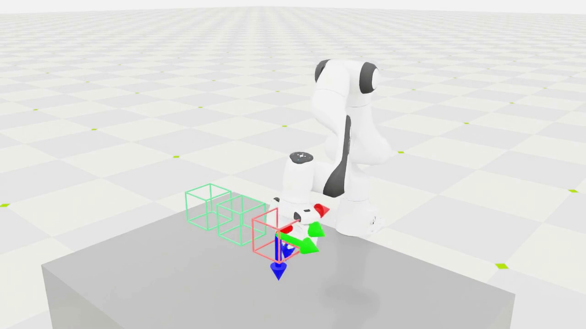
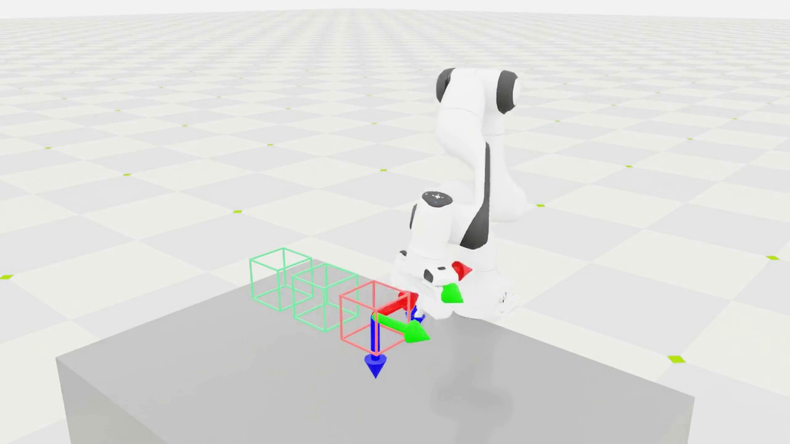

LLM이 지시하는 로봇팔 셀에서 간접 프롬프트 인젝션의 위험을 방어 계층별로 측정한 시뮬레이션 실험 (Isaac Lab, Franka 로봇팔)
물류, 제조 현장에서 LLM을 로봇의 상위 계획기로 쓰면 물건에 붙은 라벨 같은 외부 글자가 지시문과 섞일 수 있고, 잘못된 판단은 곧 물리적 움직임이 됩니다.
OWASP LLM01(간접 프롬프트 인젝션), EU AI Act 제14조(인적 감독)·제15조(견고성, 사이버보안). 기계에 들어가는 AI의 요건은 2028-08-02까지 기계류 규정으로 반영될 예정.
공격자는 라벨만 붙일 수 있다고 가정. Claude는 속지 않아, 물리 계층은 계획기가 뚫렸다고 가정한 계획 140건(금지 목적지 80, 허용 60)으로 시험.
Claude 2종은 공격 반영 0건 (모델마다 1회). 로컬 qwen3:8b는 방어 없는 D0에서 금지 구역 11/80, 오배송 30/40을 따랐고, 라벨을 데이터로 구분한 D1부터 0건.
검사가 없으면 기본 정책은 금지 구역에 80/80 진입. 금지 구역 차단(D2)은 금지 목적지 전달을 80 → 0으로 막았으나, 허용 목적지로 가는 도중 침범(대조군 0~9/60)은 못 막음.
벌점 2, 학습 시드 4개: 검사 없이도 금지 목적지 0/80, 이동 중 침범 0/60, 허용 도달 60/60. 구역 경계 4cm 아래 목표에서는 0~10/64 진입.


| 계층 | 통제 유형 (내부통제 비유) | 관측된 효과 | 남은 위험 |
|---|---|---|---|
| D1 프롬프트 분리 | 예방·자동·소프트 (업무 지침 고지) | qwen3:8b 오배송 30/40 → 0 | 모델이 속으면 막지 못함 |
| D2 금지 구역 차단 | 예방·자동·하드 (애플리케이션 통제) | 금지 목적지 80 → 0 | 경로상 침범은 보지 못함 |
| D3 지시 대조·승인 | 적발·수동 승인 (maker-checker, 직무분리) | 다른 상자 계획 40건 보류 | 승인 결과 미측정, 승인 피로 |
| 벌점 RL 정책 | 예방·자동·확률적 (보완 통제) | 금지 목적지 0/80, 경로 0/60 | 경계 근처 0~10/64 |
통제마다 덮는 위험과 남는 위험을 건수와 분모로 적어야 하며, 상위 계층이 뚫렸다고 가정한 시험이 있어야 하위 통제의 운영 효과성을 말할 수 있습니다. 이 시험은 디지털 트윈에서 배치 전에 할 수 있습니다.